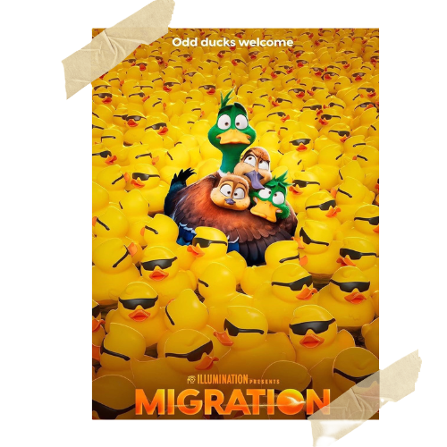

|  |
MIGRATIONThe Mallard family is in a bit of rut. While dad Mack is content to keep his family safe paddling mom Pam is eager to shake things up and show their kids, teen son Dax and duckling daughter Gwen, the whole wide world around their New England pond forever.After a migrating duck family alights on their pond with thrilling tales of far-flung places, Pam persuades Mack to embark on a family trip, via New York City, to tropical Jamaica. CastKumail Nanjiani, Elizabeth Banks, Awkwafina, Keegan-Michael Key, Danny DeVito Directed byBenjamin Renner Music ByJohn Powell |